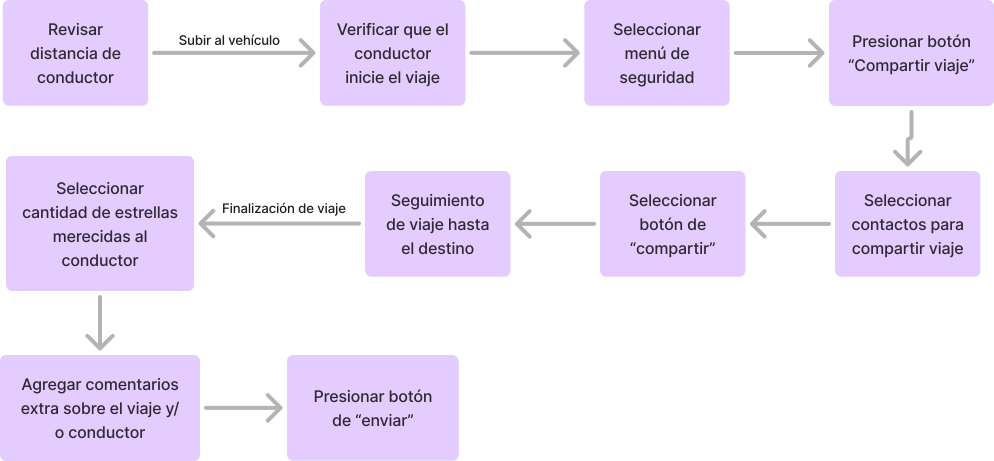
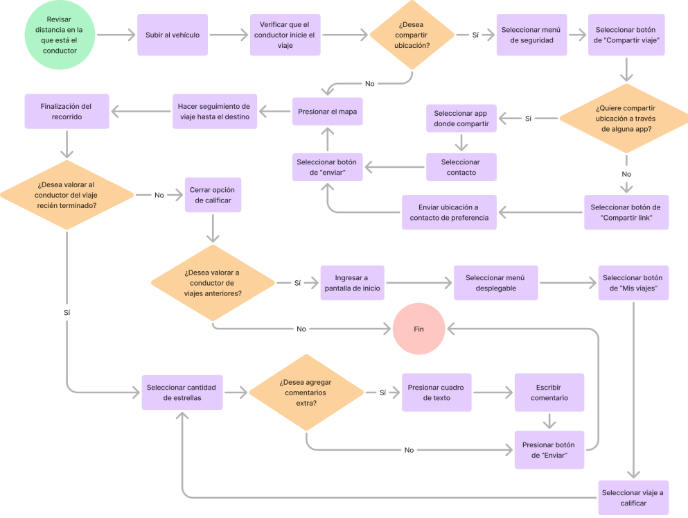
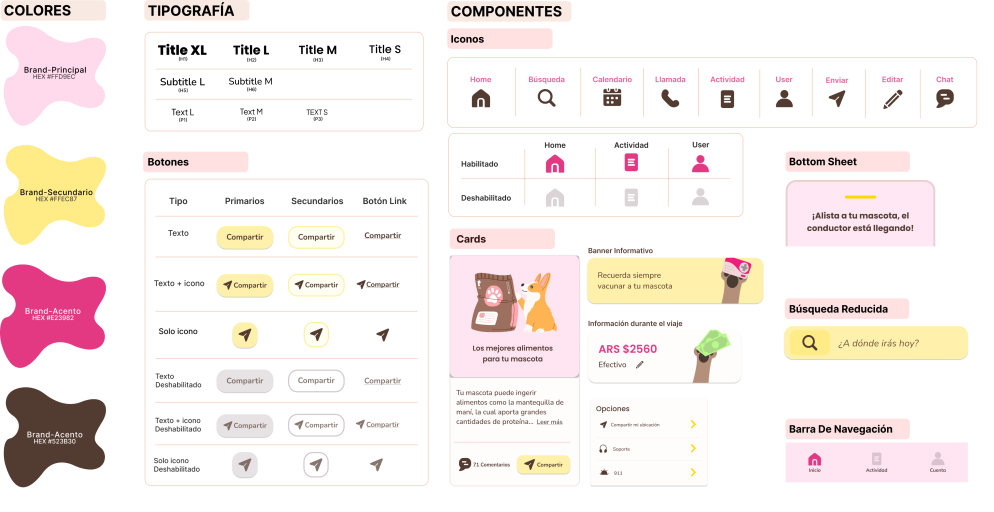

Panu

Aplicación móvil para contratar un servicio de traslado junto con mascotas de manera fácil y segura.
Tipo de proyecto: Diseño de seguimiento de viaje, calificación a conductor y compartir ubicación en tiempo real.
Rol: Diseño de producto (UX/UI)
Herramientas utilizadas: Figma, Adobe Illustrator
*Nota: Investigación UX realizada en compañía de mis compañeras: Romina Miccono y Maria Sol Paloma
Contextualización y problema
El proyecto se basa en la afirmación de un cliente ficticio, para así lograr tener un problema el cual resolver, en este caso: ¿Cómo contratar un servicio de traslado de manera fácil y segura a mi mascota?
"Necesito una aplicación para personas que viajan con mascotas puedan solicitar un traslado personal desde y hacía un lugar determinado."

El proceso
1. Empatizar
Para entender mejor las necesidades y molestias de los usuarios, se realizaron entrevistas a 6 personas. Durante estas entrevistas, se incluyeron preguntas para conocer el sentimiento de cada usuario hacia sus mascotas, así como para que compartieran sus experiencias pasadas viajando con ellas. El objetivo era identificar aspectos que pudieran resultarles molestos y, al mismo tiempo, descubrir elementos que pudieran contribuir a una experiencia más agradable durante el viaje.
Mapa de empatía
- “Si el chófer acepta un viaje con una mascota, tiene que entender que pueden presentarse situaciones inesperadas”
- "Me gustaría que cuenten con distintos métodos de pago"
- “Quiero tener la certeza de que van a aceptar llevar a mi mascota en el vehículo”
- “Me gustaría que no me subieran el precio por ir junto a mi mascota”
- "Quiero que mi mascota viaje segura"
- “Encuentro que el vehículo debería tener a mano correa, bozal y entre otras cosas elementales para las mascotas”
- "Quisiera que se respeten las normas de salubridad e higine
- "A veces me cancelan el viaje al saber que voy con mi mascota"
- “Mi barrio es muy lejano de la zona céntrica y hay menos probabilidad que trasladen a mi mascota”
- "Me cobraron una tarifa extra por viajar junto a mi mascota"
- "Existe poca disponibilidad de transportes que acepten mascotas"
- "El chófer fue intolerante por subir con mi mascota”
- “No me sentí cómodo con el trato del chófer hacia mi mascota”
- “Me perturba ver que los transportes de mascotas están en malas condiciones”
- "Cuando paseo a mi perro le llevo en una bolsa de comida y una botella con agua
- "Camino para evitar problemas de traslado"
- "Cuando necesito transportarme busco ayuda en redes sociales"
- "Utilizo diferentes apps de transporte al mismo tiempo para que me acepten el viaje más rápido”
- "Busco lugares donde permitan el ingreso de mascotas"
- "Escogí una raza pequeña para poder transladarla con más facilidad"
- "Le transmito tranquilidad a mi mascota cuando viajo con ella”
Conclusión: Los usuarios buscan un servicio inclusivo que acepte mascotas sin restricciones ni penalizaciones injustas, brindando confianza a través de normas claras y un trato empático hacia ellos y sus animales. La experiencia actual implica un esfuerzo excesivo, como usar varias apps o redes sociales, lo que resalta la necesidad de simplificar y optimizar el proceso. Además, personalizar y humanizar el servicio mediante conductores capacitados, herramientas específicas para mascotas y costos transparentes podría mejorar significativamente la experiencia del usuario.
2. Definir
A partir de los insights encontrados a partir de las entrevistas, se definieron las necesidades y áreas de oportunidad para implementar en la aplicación
| Necesidad | Áreas de oportunidad |
|---|---|
| Trasladarse tranquilo con su mascota. | Transportes que permitan mascotas |
| Seguridad en el interior del vehículo. | Certificación y verificación de vehículo apto. |
| Mantener la tarifa que se establece por llevar a 1 persona, incluso si va con su mascota | Tener variedad de precios predeterminados para cuando lleven un animal |
| Tener una descripción clara de lo que se permite llevar en el auto del conductor | Perfil de usuario/conductor |
| Rapidez y puntualidad | Gestionar preferencias de viaje |
| Conductores atentos y con buena disposición y buena calidad del servicio | Espacio para dejar una opinión y valorar a cada conductor/servicio |
| Fácil acceso para intercambiar llamadas y mensajes | Gestionar preferencias de contacto |
Necesidad
Áreas de oportunidad
El análisis de competencia realizado se focalizó en las funcionalidades de seguimiento de viaje, valoración de conductor y compartir ubicación en tiempo real. Para esto se analizaron 3 aplicaciones directas y 6 aplicaciones indirectas. A partir del análisis estas fueron las conclusiones por tarea:
El relevamiento concluyó que el trackeo debe ser sencillo y permitir al usuario visualizar siempre su vehículo y su recorrido. Los procesos deben realizarse en un solo lugar, evitando ventanas adicionales para mantener la practicidad. Mientras se espera al conductor, es mejor priorizar información en la pantalla en lugar de interacciones, y una vez dentro del vehículo, la pantalla debe ser completamente visible, utilizando un Bottom Sheet para acciones adicionales, como lo hacen otras apps similares.
El usuario podrá calificar con estrellas y agregar comentarios o problemas predeterminados. Según la cantidad de estrellas, se mostrarán opciones específicas, como no ofrecer propina en viajes negativos. Si no desea calificar de inmediato, podrá hacerlo después desde un botón de actividad en la Home Page.
El Bottom Sheet mostrará opciones básicas, pero al seleccionar "compartir ubicación", llevará al usuario a otra pantalla para elegir contactos, copiar un enlace o compartir en otras apps como WhatsApp. La ventana debe ser cerrable en cualquier momento y diseñada con pocas interacciones para agilizar el proceso. Esta función estará disponible mientras se espera al conductor o durante el viaje.
3. Idear
Una vez se analizaron las funcionalidades que la aplicación debe tener según los insights, se comenzó a idear la navegación. Comenzando a idear el Task Flow y User Flow para posteriormente poder comenzar a diseñar la interfaz visual.
El Task Flow y User Flow se realizó a partir de la instancia en la que el usuario está esperando la llegada del conductor, para que de esta manera, se puedan abarcar a detalle las funcionalidades de seguimiento, calificación y compartir ubicación.
Task flow
User flow
4. Prototipar
A partir del Task Flow y User Flow se diseñaron los wireframes interactivos de cómo sería el funcionamiento de Panu.
Una vez realizados los wireframes se tomaron las 3 pantallas principales para realizar los mockups a partir del style tile y moodboard, los cuales se basaron en 3 palabras claves que definen a Panu: Kawaii, compañero incondicional y viaje confortable.
Style tile
Mock Ups
Home
Espera llegada de conductor
Bottom sheet
Para finalizar
Diseñar esta app desde cero me enseñó la importancia de equilibrar las necesidades del usuario y del cliente. La investigación UX fue clave para crear una navegación acorde al usuario, mientras que la estética kawaii y amigable destacó en lo visual. Aún hay espacio para mejorar, especialmente en UX y UI, incorporando ideas innovadoras para aumentar su valor.